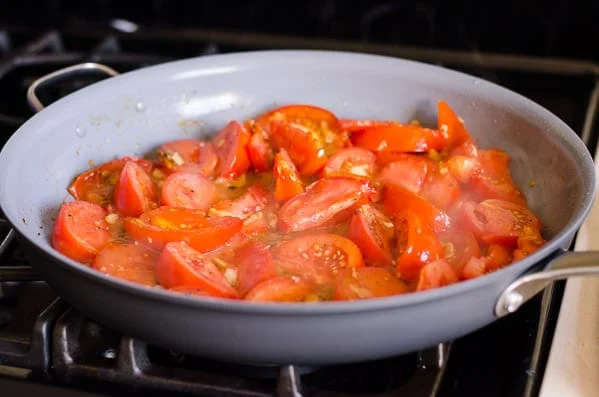
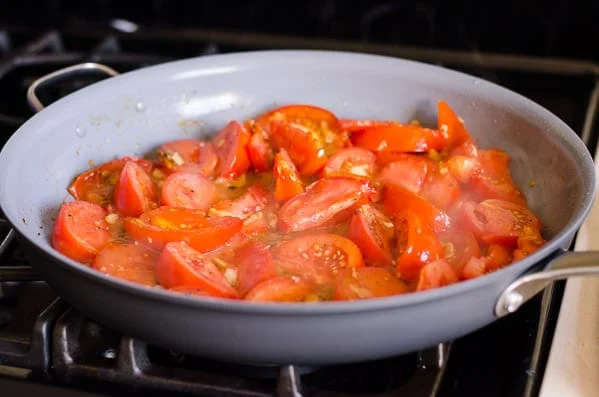

Tomato and Egg
- Origin: China
- Source: Own Recipe
- Cateogry: Main Dish

Tomato and eggs is a hot dish which originated from China. It is a simple and fast dish to make, but it has good nutritional value. It is a very satisfying food to eat and popularly served with rice and topped with green onions.
Recipe Ingredients
- Tomatoes
- Egg
- Salt
- Sugar
- Cooking Oil
Recipe Steps
- Crack eggs into a bowl and mix until scrambled
- Cut tomatoes into pieces around the size of your thumb
- Oil a hot pan and cook the eggs until satisfied then remove the eggs
- Re-oil the pan and cook the tomatoes until they loosen
- Combine eggs and tomatoes and season with salt and sugar
Image Gallery
 


Shrimp Scampi
- Origin: Italy
- Source: NY Times
- Cateogry: Main Dish

Shrimp scampi is a classic Italian-American delight, where succulent shrimp meet a medley of garlic, butter, and white wine. Sautéed to pink perfection, the shrimp mingle with a fragrant blend of garlic and red pepper flakes. A drizzle of white wine and a squeeze of lemon create a luxurious sauce, embracing the dish's linguine base. With a sprinkle of parsley, it's a harmonious, flavorful masterpiece that exemplifies both simplicity and taste.
Recipe Ingredients
- 2 tablespoons butter
- 2 tablespoons extra-virgin olive oil
- 4 garlic cloves, minced
- ½ cup dry white wine or broth
- ¾ teaspoon kosher salt, or to taste
- ⅛ teaspoon crushed red pepper flakes, or to taste
- Freshly ground black pepper
- 1¾ pounds large or extra-large shrimp, shelled
- ⅓ cup chopped parsley
- Freshly squeezed juice of half a lemon
- Cooked pasta or crusty bread
Recipe Steps
- In a large skillet, melt butter with olive oil. Add garlic and sauté until fragrant, about 1 minute. Add wine or broth, salt, red pepper flakes and plenty of black pepper and bring to a simmer. Let the wine reduce by half, about 2 minutes.
- Add shrimp and sauté until they just turn pink, 2 to 4 minutes depending upon their size. Stir in the parsley and lemon juice and serve over pasta or accompanied by crusty bread.
Image Gallery


Dead Simple Fried Rice
- Origin: North America/East Asia
- Source: Own Recipe
- Cateogry: Main Dish

This Dead Simple Fried Rice recipe is an incredibly modular and tasty dish. At its core, it's just rice, vegetables, protein, and oil. As such, the dish can be modified to serve as many or as few people as needed with a wide variety of food preferences. Experimentation with what specific ingredients you enjoy the most will unlock the full potential of this dish.
Recipe Ingredients
- Long-grain white rice
- Frozen Vegetables
- Eggs
- (optional) Milk
- Oil
- Salt
- Soy Sauce
- (optional) Additional Sauce: Curry Sauce/Paste, Spicy Teriyaki Sauce, or Sweet Chili Sauce
- (optional) Additional Pre-cooked/Fast-cooking Protein of Choice: Nuts, sausage, tofu, or bacon
- (optional) Additional Fresh Vegetables: Green onions, celery, and vidalia onions
Recipe Steps
- In a rice cooker, add half a cup of rice, a cup of water, a touch of oil, and a pinch of salt. Cook the rice. Tip: if there are tough frozen veggies, such as broccoli, you might want to add the frozen veggies to the integrated steamer basket
- On high medium heat on your stovetop, in a frying pan, add your chosen oil. Add some milk if desired. Then, scramble the eggs
- Before the eggs are fully done, add the frozen vegetables. Add fresh vegetables when required so they are fully cooked by the end
- (Optional) Add the additional protein when required so they are fully cooked by the end
- Once the rice is done, add it to the pan. Poor your desired amount of Soy Sauce. Stir well
- (Optional) After that, add your desired amount of additional sauce. Stir well
- Let the fried rice cook until it is no longer visibly oily and the dish is nice and hot, with the vegetables fully cooked
- Plate the fried rice. Enjoy!
Image Gallery